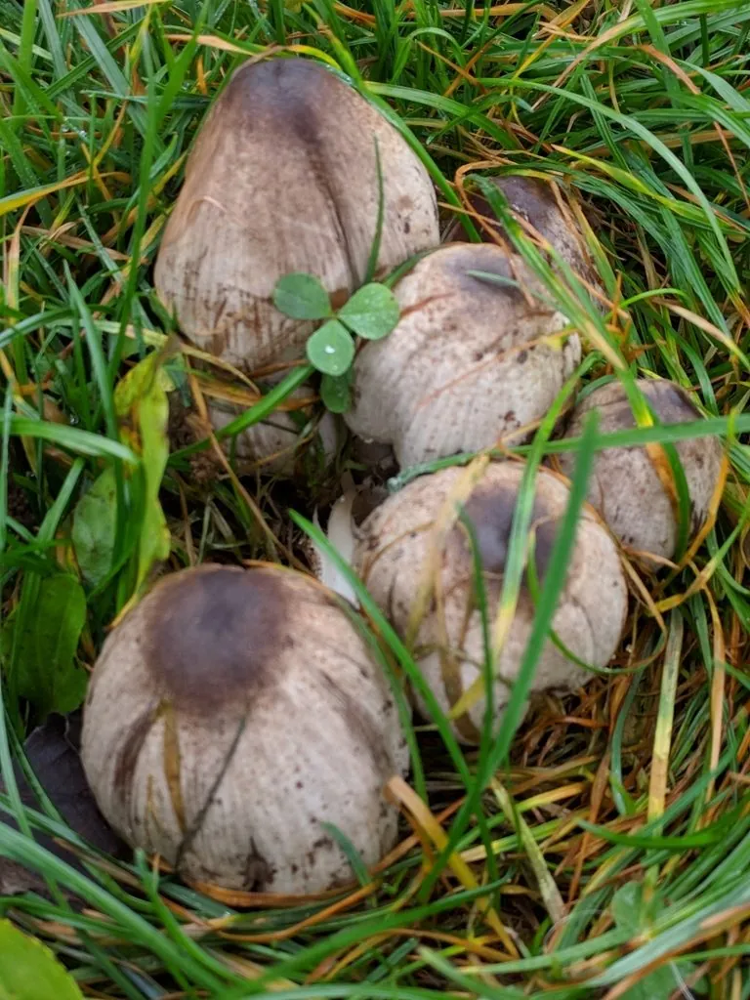

真菌 · 真菌界
墨汁鬼伞 Coprinopsis atramentaria

墨汁鬼伞的菌盖灰褐色、有纵棱，成熟后自溶成黑色墨汁，含有鬼伞素，与酒精同食会引起中毒，属有毒、不可食用的菌类。
- 分类
- 门担子菌门纲伞菌纲目伞菌目科蘑菇科属拟鬼伞属
- 栖息环境
- 草地、路旁、树桩周围与埋有腐木的土壤，春末至秋季出菇
- 地理分布
- 温带地区广泛分布，中国各地常见
- 保护级别
- 暂无评估（IUCN 未评估，中国未列入重点保护名录）
物种志
墨汁鬼伞是担子菌门蘑菇科的真菌，子实体丛生。菌盖幼时卵形至钟形，高 3–7 cm，直径 2–5 cm，表面灰褐色至灰白色，有明显的纵向棱纹，中央常有细小的鳞片；菌肉薄，灰白色。菌褶密集，幼时白色，后变为灰褐色至黑色。菌柄白色，细长，中空，长 5–12 cm，基部稍粗。孢子印黑色。成熟后菌盖边缘自溶，变成黑色的墨汁状液体。
墨汁鬼伞生于草地、路旁、树桩周围和埋有腐木的土壤上，春末至秋季出菇，在温带地区广泛分布，中国各地常见。它含有鬼伞素，这种物质会抑制酒精在体内的代谢，与酒同食后会出现面部潮红、心悸、恶心、呕吐等双硫仑样反应，严重时可危及健康；即使经过烹调，鬼伞素也不能完全破坏。因此墨汁鬼伞有毒、不可食用，尤其不能与酒同食，采菌和饮酒时都要特别注意。
形态与习性
- 菌盖卵形至钟形，高 3–7 cm，有纵棱
- 菌褶白色，后变灰褐至黑色
- 菌柄白色细长，中空，长 5–12 cm
- 自溶成熟后边缘化成黑色墨汁
- 毒性含鬼伞素，与酒精同食引起中毒
- 食用性有毒，不可食用，尤其不能与酒同食
- 孢子印黑色
趣味知识
- 墨汁鬼伞含鬼伞素，和酒一起吃会脸红、心慌、恶心。
- 这种反应类似戒酒药双硫仑的作用，所以又叫“双硫仑样反应”。
- 烹调不能破坏鬼伞素，因此它有毒、不可食用。
- 成熟后菌盖会化成黑墨水，是鬼伞类共有的特点。